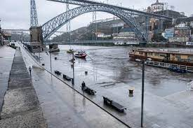

Cheias no Porto
O Porto, cidade às margens do rio Douro, encara desafios frequentes com as cheias, especialmente nos meses de inverno. Essas inundações impactam não só a mobilidade e a infraestrutura, mas também provocam reflexões sobre a gestão urbana e as mudanças climáticas.
Vamos explorar como as cheias afetam o coração cultural de Portugal. O Porto, com suas colinas pitorescas e proximidade com o rio, é deslumbrante, porém vulnerável às intempéries. Projetos de infraestrutura e conscientização buscam fortalecer a cidade contra esse desafio constante.
Este é um olhar mais aprofundado sobre como o Porto, com sua rica herança cultural, enfrenta as cheias. Destacaremos as medidas adotadas para fortalecer a resiliência da cidade, ressaltando a importância da inovação e da colaboração global em prol de um futuro mais sustentável.
